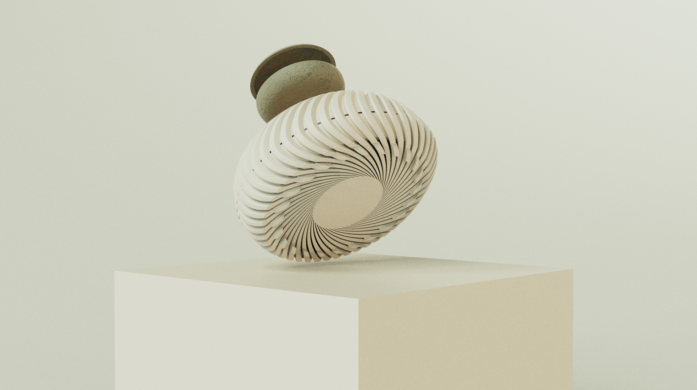

Sleep-aid Speaker
A nature-inspired noise machine that allows the person to play a tune or podcast, and
adjust the level of background white noise added to the audio.
This project was an exercise in human-object interaction, discovering the audio world, and chasing beauty.
Page in progress...
Time |
5 weeks |
Role |
ID, Interaction, CMF |
Tools |
SolidWorks, Keyshot, IdeaMaker, FDM Printer, Adobe Illustrator |
